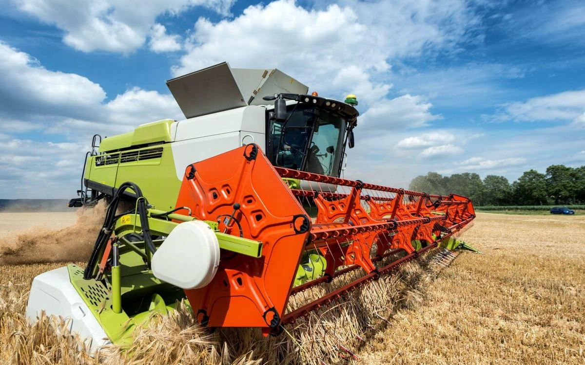
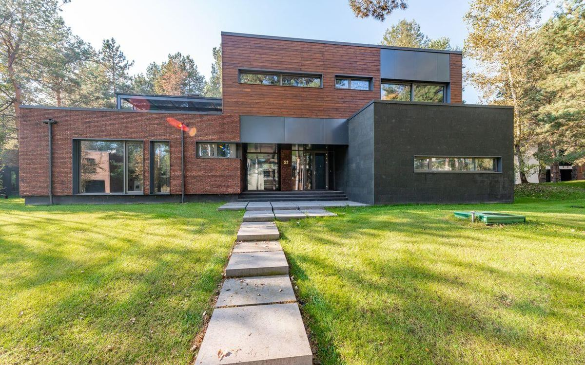

Crédito como ferramenta de crescimento, não como solução emergencial.
Estruturamos crédito corporativo e capital de giro para empresas com demandas financeiras robustas, com inteligência, discrição e visão de longo prazo.
Entre as instituições da nossa rede: Banco do Brasil, Caixa Econômica Federal, Itaú, Bradesco, Santander, BTG Pactual, Banco BV, BNDES, BDMG, Banco Daycoval, Sicoob, Sicredi, Fintechs, Fundos de investimento.
Estruturamos a operação antes de procurar o capital.
2 empresas com o mesmo faturamento e a mesma necessidade de caixa raramente deveriam contratar a mesma operação. O que muda não é o valor: é o ciclo, a qualidade do lastro, o passivo já contratado e o horizonte da decisão.
Por isso não trabalhamos com um catálogo. Levantamos o contexto, dimensionamos a necessidade real e só então procuramos, dentro da nossa rede, a estrutura que sustenta aquele objetivo pelo prazo em que ele precisa ser sustentado. Quando a resposta certa é não contratar, dizemos isso.
A pergunta não é quanto capital cabe. É qual estrutura sustenta a decisão pelo prazo em que ela precisa ser sustentada.
Objetivo
O que o capital precisa viabilizar, e em que prazo isso se paga.
Estrutura
O passivo já existente, seu custo e o que dele pode ser substituído.
Patrimônio e garantias
Quais ativos podem ser mobilizados sem comprometer a operação ou a família.
Capacidade e risco
O fluxo de caixa que efetivamente sustenta a parcela, no cenário realista.
8 formas de estruturar capital. Cada uma responde a um problema diferente.
Percorra a lista para ver o desenho de cada operação, o que ela resolve e onde ela costuma ser mal empregada.
Capital de Giro
Linha estruturada para financiar a distância entre pagar fornecedores e receber de clientes.
Home Equity
Crédito com garantia imobiliária, sob alienação fiduciária, para quem tem patrimônio parado.
Auto Equity
Crédito com garantia de veículo quitado ou com margem, avaliado contra a curva de depreciação.
Crédito PJ
Comparação estrutural entre instituições, naturezas jurídicas e mecanismos públicos de garantia.
Estruturação de Crédito
Desenho de operações sob medida: múltiplas fontes, garantias combinadas e cronograma próprio.
Financiamento
Financiamento habitacional e produtivo, com liberação vinculada a etapa e cronograma.
Aquisição e Construção
Estruturação para aquisição de terreno, incorporação, obra e expansão de ativos produtivos.
Recebíveis e Mercado de Capitais
Antecipação de recebíveis, CRI, CRA e emissão de debêntures para acesso direto a investidores.
BNDES, PEAC FGI, Pronampe e Procred 360, num só lugar.
Antes de procurar garantia real, verificamos se a empresa se enquadra em algum programa público de crédito ou garantia. Quando cabe, isso costuma reduzir exigência de garantia ou baixar o custo final. Veja como funciona cada um e simule valor, taxa e parcela.
- Regras de elegibilidade de cada programa, lado a lado.
- Simulador de valor, taxa e parcela, sem enviar nenhum dado.
- Verificação de enquadramento junto a um especialista, quando fizer sentido.
Ir direto para:
Da primeira conversa ao capital liberado.
Um retrato simplificado de como um caso avança pelas etapas internas; cada operação real tem seu próprio ritmo.
Etapa 1Primeiro contato
Etapa 2Diagnóstico com Consultor
Etapa 3Elegibilidade
Etapa 4Documentação
Etapa 5Capital de giro
Etapa 1 começa por aqui.
Solicitar análiseComo um diagnóstico é conduzido.
O processo completo, com documentação e prazos, está descrito na página dedicada.
Mapeamos as dívidas contratadas, taxas, prazos e garantias já comprometidas. Boa parte do ganho de uma operação bem estruturada vem daqui, antes de qualquer dinheiro novo entrar.
Avaliamos os ativos disponíveis, o saldo devedor de cada um e a margem realista de aproveitamento. Garantia superavaliada não é vantagem: é atraso na formalização.
Comparamos instituições pela natureza jurídica, pela base legal da garantia e pelo custo efetivo total. Taxa de vitrine e custo real quase nunca coincidem.
Apresentamos a estrutura recomendada com os números da simulação e os cenários alternativos. A decisão final é sempre do cliente, com a informação completa na mesa.
Depoimentos: o que dizem empresários que já passaram pelo diagnóstico
- “A restrição que travava tudo tava no CPF do meu sócio, e nenhum banco tinha me dito isso antes. Foi o diagnóstico que trouxe essa resposta com clareza.” Marcos T., Indústria · SP
- “O relatório mostrou exatamente o que a mesa de crédito enxergava como risco, e isso me deu tempo pra corrigir antes de fazer um novo pedido.” Renata C., Comércio · MG
- “Já levei duas negativas sem entender o porquê. O diagnóstico não enrolou, foi direto nos pontos que eu precisava corrigir na empresa.” Fábio A., Serviços · PR
- “Eu sempre achei que faturamento era tudo o que importava. O diagnóstico abriu meus olhos pra outros pontos que vinham pesando contra a aprovação.” Juliana M., Varejo · RS
- “Antes eu só pedia crédito e ficava na expectativa. Hoje sei exatamente o que uma mesa de crédito olha, e isso mudou completamente como preparo a empresa antes de qualquer pedido.” Rodrigo L., Logística · GO
- “Eu já desconfiava que o problema não era só faturamento, mas não sabia por onde começar a investigar. O diagnóstico organizou isso em poucos dias e me poupou meses de tentativa e erro.” André P., Agronegócio · MT
92% de aprovação nas operações que estruturamos.
O número nasce de um filtro anterior à submissão: só chega ao crédito a operação já comparada por natureza jurídica, garantia e custo efetivo entre as instituições da rede.
Refere-se às operações estruturadas e submetidas pela Acrópole Capital às instituições parceiras. A aprovação final, as condições e o prazo são sempre decisão exclusiva da instituição financeira responsável.
4 contextos, exigências distintas.
Empresas
Capital de giro dimensionado pela necessidade real, reestruturação de passivo caro, aquisição de ativos e expansão. Para operações corporativas estruturadas, trabalhamos a partir de R$ 500 mil.
Investidores e incorporadores
Aquisição de terreno, incorporação, obra e expansão de ativos, com liberação vinculada a cronograma físico-financeiro e estrutura de garantias desenhada por fase.

Agronegócio
Custeio de safra, CPR, aquisição de maquinário e expansão de área, com garantia e prazo pensados para o calendário agrícola, não para o calendário bancário.

Patrimônio pessoal
Empresários e famílias com patrimônio imobiliário que buscam liquidez ou substituição de dívida cara, com avaliação honesta do risco de comprometer o bem.
74 instituições. 6 nações. 1 pilar.
Acesso amplo não é argumento de vitrine: é o que permite recusar uma condição ruim e buscar outra. Contamos com braço financeiro próprio e conexão ativa com mais de 74 instituições no Brasil, na Inglaterra, em Portugal, na Suíça, nos Estados Unidos e nos Emirados Árabes Unidos.
- Bancos, cooperativas, SCDs, SEPs e fintechs de crédito com garantia real. Cada natureza jurídica se comporta de um jeito quando o cenário aperta, e é por isso que comparamos entre elas.
- Funding nacional e internacional. Operações que se beneficiam de custo ou prazo diferentes dos praticados internamente podem ser levadas ao exterior.
- Um único pilar sustenta a operação do cliente, mesmo quando ela envolve mais de um credor, garantias hierarquizadas e formalizações em sequência.
Trabalhamos com os números públicos, não com impressões.
Acompanhamos as séries do Banco Central, os dados setoriais e os indicadores de inadimplência porque eles mudam a recomendação. Um mesmo pedido de capital de giro recebe respostas diferentes conforme o custo do funding e a seletividade do momento.
Dados públicos referentes ao período mais recente disponível em cada fonte, consultados em setembro de 2026. Séries de concessão são fluxo mensal e sofrem sazonalidade relevante: uma queda mensal não indica, por si só, contração estrutural.
Material técnico para quem decide sobre crédito.
Escrevemos sobre o que costuma custar caro por falta de informação: custo efetivo, prazo, garantia e o momento certo de cada estrutura.

Home Equity
Trocar dívida cara por garantia real: a conta que decide, e a que engana
A diferença de taxa entre uma linha sem garantia e uma linha com garantia real não é de pontos percentuais, é de múltiplos. Ainda assim, a migração nem sempre compensa.
18 ago 2026 · 7 min

Capital de Giro
Lucro no papel e caixa vazio: como a necessidade de capital de giro cresce
É possível fechar o exercício com lucro contábil e não ter caixa para o mês seguinte. Na maior parte dos casos, o motivo tem nome e tem medida.
30 jul 2026 · 6 min

Auto Equity
Auto equity: o prazo importa mais do que a taxa
A modalidade transforma um veículo quitado em liquidez rápida. O risco não está na velocidade, está em contratar um prazo que a curva de depreciação não sustenta.
9 jul 2026 · 5 min
Antes de você escrever para a gente.
Perguntas que aparecem antes de qualquer detalhe da operação. As dúvidas específicas de cada estrutura estão na página dela.
Não. A Acrópole atua na assessoria e estruturação de operações de crédito, e não concede crédito diretamente. A decisão final, a taxa e o prazo são sempre definidos pela instituição financeira responsável pela operação.
Não. O envio não representa solicitação formal de crédito nem aprovação, e nenhuma consulta a bureau de crédito é feita sem a sua autorização expressa.
Em até 2 minutos, pelo canal que você indicar no formulário de contato. A leitura técnica completa da operação vem na conversa seguinte.
Não. Se não tiver certeza, o diagnóstico rápido leva menos de um minuto e aponta uma direção antes da conversa, ou você pode simplesmente descrever a situação no formulário de contato.
Traga o contexto. Devolvemos uma leitura técnica.
Uma conversa inicial não gera compromisso nem consulta a bureau. Serve para entender se a estrutura que você procura existe e sob quais condições.